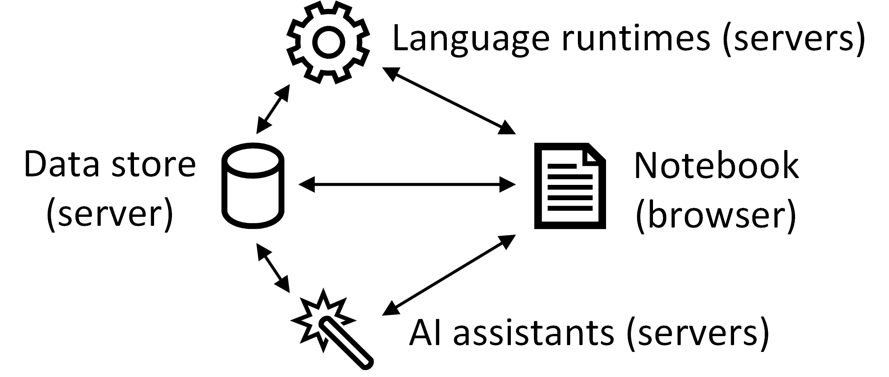

Feedback
- nowhere tell us what the origin of Wrattler is
- "What makes data science hard" - Link to what Charles says
- DEMO - clarify: things we've done, things we know how to do, things that are visionary there is too much: principles of wrattler, implementation, broadband data set
- Traditional notebook - show some cells in the slide?
- Number buzzwords (1 interactive, 2 smart, 3 polyglot)
- DEMO - do all in one?
- GLM problem - sell better or replace with something better
Wrattler: Interactive, smart
and polyglot notebooks
Tomas Petricek, The Alan Turing Institute
Data science
What makes data science so hard?
Hard-to-find special cases
Every data set is different
Can't say what works until we've done it
Many tasks are repetitive
Data science
What tools do we need?
Interactive – give quick feedback
Reproducible – be able to go back
Polyglot – mix tools that work
Smart – get help from the AI
Explainable – no black boxes
DEMO
Analysing broadband speed in Wrattler
https://wrattler.github.io/wrattler/broadband.html
Traditional notebook architecture

1 Limited reproducibility
2 No rollback of state
3 Limited interaction model
4 One language per kernel
Wrattler system architecture
Wrattler system architecture
1 Versioning and provenance
2 Interactive development
3 Platform for AI assistants
4 Polyglot programming
Wrattler
Interactive, smart and polyglot notebooks
DEMO
Interactive – Exploring data in the browser
Interactive
Tighter interaction feedback loop
Browser-based language
Recalculated on-the-fly
Using dependency graph


DEMO
Smart – Cleaning data with the datadiff assistant
Smart
Simplifying process with AI assistants
Full access to data store
No black box magic
Domain specific languages
DEMO
Polyglot – Sharing data between R and JavaScript
Polyglot
Enabling platform for data science
Share data via data frames
Computation graph for provenance
Semantic annotations
Summary
Interactive, smart and polyglot notebooks
Wrattler
Three key ideas behind the system
Separate state and language runtimes
Dependency graph in the browser
Platform for AI assisted data science
Questions, answers & discussion
Data store – Best data and annotation formats?
Integration – Languages? Jupyter integration?
AI assistants – What kinds of assistants?
http://tomasp.net | tomas@tomasp.net | @tomaspetricek
To wrap up, I'll end with a slide that lists the three next papers that I plan to write. The first one is about implementing live programming environments, which is surprisingly tricky and the second one is extending the data aggregation work to cover data cleaning with AI assistants. Finally, I talked about one of the things that I'm interested in, but I also work on philosophy and history of programming and I got invited to submit a paper to an ACM HOPL conference, so that's my third. I have ideas about coeffects too, but I only wanted to list three.